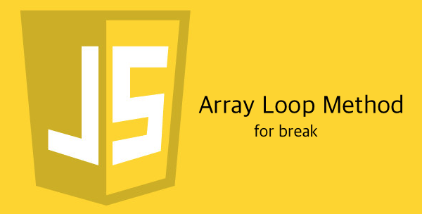

이 글은 Outsider 님의 블로그 포스트 중
forEach에 break문 대신 some 사용하기를 보고 큰 감명을 받아
내가 이해한 내용을 토대로 정리해 본 글이다.
for loop
for 반복문을 써서 배열을 순회하는 것은 할당, 프로퍼티 참조, 조건 분기 등등의 잡다한 일을 해야한다.
이러한 잡다한 일을 실수로 코딩을 잘못하면 원하지 않는 결과가 나오고, 귀찮음이 몰려오기 마련이다.
continue 기능만 있는 배열 순회 메소드(ES5, IE9+)
따라서 그런 점을 해소하고자 ES5(IE9+)에서는 배열의 순환 메소드인
forEach, reduce, map, filter 등등이 추가됐다.
하지만!
이 메소드는 continue는 지원하지만 break는 지원하지 않는다.
또한 continue 기능은 continue 대신에 함수를 종료 시키는
return 키워드를 사용하며 반환하는 값은 중요치 않다.(continue 시키는 데에 있어서는)
return 키워드로 함수를 조기 종료 시켜도, 현재 요소에 대한 콜백 함수(continue)를 종료 시킨 것이지
모든 요소에 대한 콜백 함수(break)를 종료시켜버리는 것이 아니기 때문에 바로 다음 콜백함수의 실행이 일어난다.
break 기능까지 있는 배열 순회 메소드(ES5, IE9+)
falsy values: boolean으로 형변환 했을 때 false로 취급되는 값들
false, 0, ‘’, null, undefined, NaN
truthy values: boolean으로 형변환 했을 때 true로 취급되는 값들
falsy value가 아닌 모든 값들.
some
콜백함수가 반환하는 값이 하나라도 true인지 파악하는 메소드
하나라도 truthy value를 반환하는 순간 콜백함수를 멈춤.12345678910111213141516171819202122232425262728293031const arr = [0, 1, 2, 3, 'q', 5, 6, 3.3, 5, 6, 3.3, 5, 6, 3.3,5, 6, 3.3, 5, 6, 3.3, 5, 6, 3.3, 5, 6, 3.3];// 배열이 숫자로만 이루어져있는지 파악하는 함수const isArrNum5 = arr => {const isNum = arr.some(v => {console.log(v);if(isNaN(v)) { // 숫자가 아니라면// some에서 truthy value를 반환하면 break와 동일함.return true;}// some에서 falsy value를 반환하면 continue와 동일함.return false;});// 숫자가 아니라면 some은 true를 반환하므로 not 연산자(!)를 써서 반환해줘야함.return !isNum;};// 0// 1// 2// 3// q// falseconsole.log(isArrNum5(arr));// 사실 아래와 같이 줄여쓸 수 있는 예제이다.const isArrNum6 = arr => !arr.some(v => isNaN(v));every
콜백함수가 반환하는 값이 모두 true인지 파악하는 메소드
하나라도 falsy value를 반환하는 순간 콜백함수를 멈춤.123456789101112131415161718192021222324252627282930const arr = [0, 1, 2, 3, 'q', 5, 6, 3.3, 5, 6, 3.3, 5, 6, 3.3,5, 6, 3.3, 5, 6, 3.3, 5, 6, 3.3, 5, 6, 3.3];// 배열이 숫자로만 이루어져있는지 파악하는 함수const isArrNum7 = arr => {const isNum = arr.every(v => {console.log(v);if(isNaN(v)) { // 숫자가 아니라면// every에서 falsy value를 반환하면 break와 동일함.return false;}// every에서 truthy value를 반환하면 continue와 동일함.return true;});return isNum;};// 0// 1// 2// 3// q// falseconsole.log(isArrNum7(arr));// 사실 아래와 같이 줄여쓸 수 있다.const isArrNum8 = arr => arr.every(v => !isNaN(v));